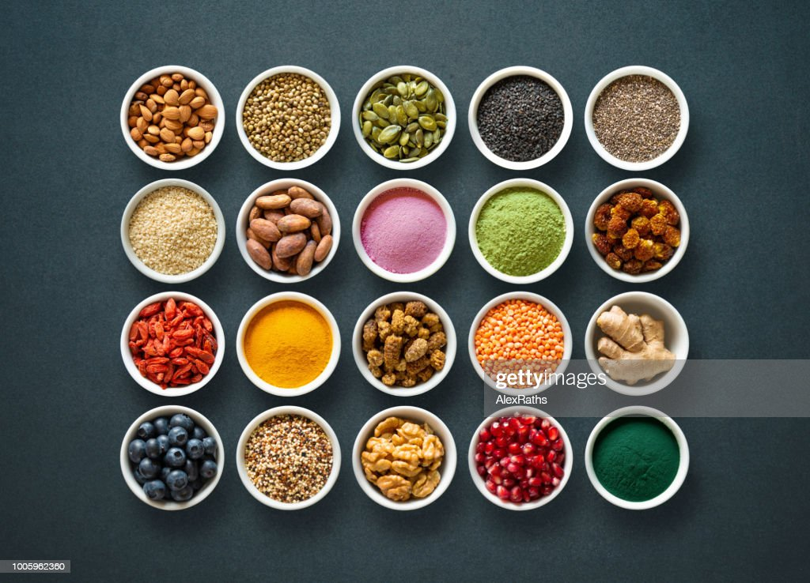

Ingredients:

- 2 cups Egusi (ground melon seeds)
- 1/4 cup Palm Oil
- 1 Onion, chopped
- 3 cloves Garlic, minced
- 1 tablespoon Ginger, minced
- 2 cups Chicken or Beef Broth
- 1 can Tomato Sauce
- 2 Habanero Peppers, chopped
- 1/2 teaspoon Salt
- 1/2 teaspoon Black Pepper
- 1/2 teaspoon Curry Powder
- 1/2 teaspoon Thyme
- 1 bunch Spinach or Kale, chopped
Cooking Instructions:
- In a large pot, heat the palm oil over medium heat.
- Add the chopped onions, garlic, and ginger and sauté for 3-5 minutes, until softened.
- Add the Egusi and stir constantly for 5-7 minutes, until it starts to turn golden brown.
- Gradually add the chicken or beef broth, stirring constantly to prevent lumps from forming.
- Add the tomato sauce, Habanero peppers, salt, black pepper, curry powder, and thyme, and stir to combine.
- Reduce heat to low and let the soup simmer for 20-30 minutes, stirring occasionally.
- Add the chopped spinach or kale and stir to combine. Cook for an additional 5-10 minutes until the greens are wilted and tender.
- Remove from heat and serve hot with your choice of side dish.